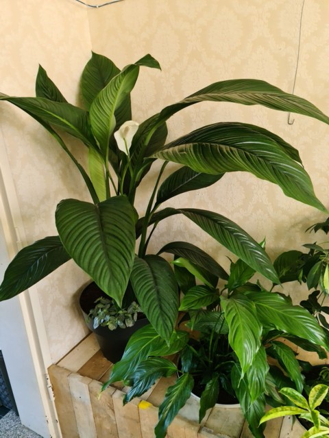
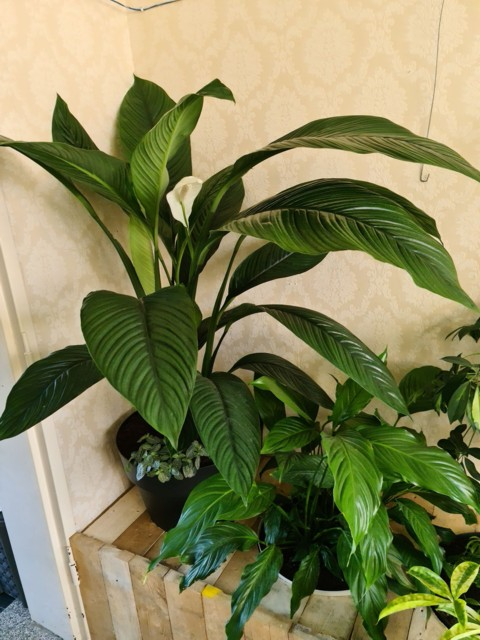
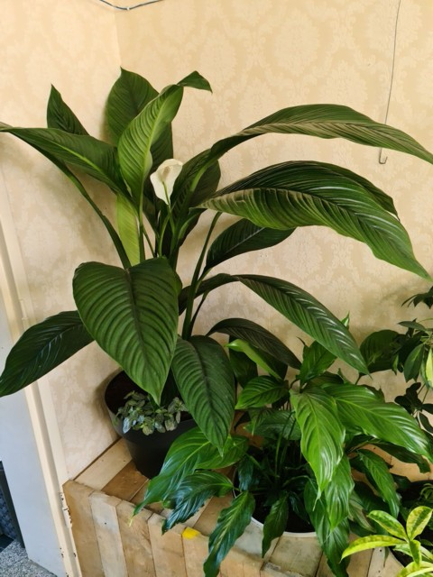

| Nom et photo | Exposition | Arrosage | Rempotage | Saisons | Spathiphyllum sensation | Lumineuse sans soleil direct. Soleil d'hiver sans danger. | Généreux pour maintenir le substrat toujours humide sans tremper dans l'eau. À besoin d'une bonne humidité ambiante. | Terreau normal pour plantes d'intérieur. Bac plastique de bonne taille. | Été en intérieur ou extérieur et en hiver en intérieur à température ambiante. |
|---|

| Nom et photo | Exposition | Arrosage | Rempotage | Saisons | Spathiphyllum wallisii |
Lumineuse sans soleil direct. Soleil d'hiver sans danger. | Généreux pour maintenir le substrat toujours humide sans tremper dans l'eau. À besoin d'une bonne humidité ambiante. | Terreau normal pour plantes d'intérieur. Bac plastique de bonne taille. | Été en intérieur ou extérieur et en hiver en intérieur à température ambiante. |
|---|